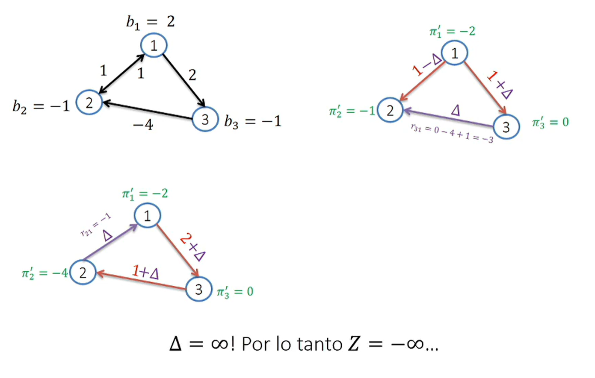

Lectura 1: Simplex para problemas de Flujo#
Antes de empezar
Les recomiendo ver este video del algoritmo SIMPLEX.
Otra curiosidad, a que no se imaginan que el SIMPLEX es una figura geométrica, aquí les dejo un link que lo explica.
Supongamos por ahora que:
la demanda de la red se encuentra balanceada
No existe restricción de capacidad en los arcos
Solo se exige que el flujo sea no negativo
Solución mediante SIMPLEX#
Dado que el problema es lineal, podemos resolverlo mediante el método SIMPLEX. Sin embargo:
La dificultad de plantear el problema como un problema de programación lineal crece con el tamaño de la red (imaginate la rede de 417 nodos que tenemos en nuestro proyecto)
La matriz de restricciones es muy grande y SIMPLEX requiere manipular esta matriz en cada iteración
El problema de flujo a costo mínimo sueele tener una solución dispersa, es decir, muchos arcos con flujo cero. Esto hace que la matriz de restricciones sea muy grande y dispersa, lo cual dificulta la aplicación de simplex.
A pesar de esto, a parter de SIMPLEX se pude obtener un algoritmo para resolver el problema de flujo a costo mínimo de forma eficiente.
Rango de la matriz de restricciones#
Observemos las restricciones de balance de flujo para cada nodo \(i \in V\):
Que pasaria si sumaramos estas restricciones para todos los nodos ?
Cada arco aparece dos veces en la suma, una vez con signo positivo y otra con signo negativo.
La suma de todas las restricciones de balance de flujo es cero.
Por tanto, las suma de las restricciones da cero a ambos lados, lo que implica que una de las restricciones es linealmente dependiente de las demás.
Por tanto, el rango de la matriz de restricciones es menor que el número de nodos de la red.
Esto implica que la matriz de restricciones es singular, lo cual impide la aplicación de SIMPLEX.
Por tanto, debemos eliminar una de las restricciones de balance de flujo para poder aplicar SIMPLEX.
Repaso de SIMPLEX#
Considere el siguiente problema de programación lineal en su forma estándar:
En este pproblema \(A\) es una matriz de rango máximo de dimensiones \(m \times n\) con \(m < n\). Por tanto, el sistema de ecuaciones \(Ax = b\) tiene infinitas soluciones.
Una solución básica del problema poseerá \(m\) variables básicas y \(n-m\) variables no básicas. Por tanto, el sistema de ecuaciones \(Ax = b\) se puede escribir como:
En nuestro problema de flujo esto implica que una solución básica poseerá a lo máximo \(|V|-1\) variables básicas y \(|E|-|V|+1\) variables no básicas.
Solución basica en una red#
Una solución básica en una red es aquella que posee \(|V|-1\) variables básicas y \(|E|-|V|+1\) variables no básicas. En este caso, habrá \(|V|-1\) arcos con flujos no negativos. Que topología tendrá esta solución básica? que le recuerda esto?
Supongamos el siguiente ejemplo
Que denota una solución básica en esta red?
Bosquejo de un algoritmo simplex para redes#
Con esto, podemos tener una idea de como resolver este problema
Encontrar (de alguna manera) un árbol inicial factible T.
Determinar si el árbo es óptimo. Si lo es, detenerse. Si no, mejorarlo.
Repetir el paso 2 hasta que el árbol sea óptimo.
Como determinar si el árbol es óptimo?
Como mejorarlo?
Costos reducidos#
Consideremos la siguiente formulación equivalente del modelo, donde las variables \(x_B\) son las variables básicas y \(x_N\) son las variables no básicas:
Una base corresponderá al óptimo del problema si su solución asociadad es factible (es decir, si \(x_B \geq 0\)) y si los costos reducidos de las variables no básicas son no negativos.
Los costos reducidos de las variables no básicas se definen como:
Por qué ocurre esto ?
Despejando \(x_B\) de la ecuación \(Bx_B + Nx_N = b\) obtenemos:
Reemplazando esto en la función objetivo obtenemos:
Sabemos que en la solución actual \(x_N = 0\). Para que sea óptima, debemos garantizar que no convenga que ningún \(x_N\) sea positivo, lo que implica que \(\bar{c}_j \geq 0\) para todo \(j \in N\) (variable no básica).
la expresión \(c_N^T- c_B^T B^{-1} N \) puede ser reescrita usando las variables duales como:
Los valores del vector \(\pi\) son llamados potenciales y corresponden a los precios sombra del problema.
Problema dual#
sea el primal es:
el problema dual asociado es:
De la dualidad sabemos:
Si \(x\) es factible para el primal y \(\pi\) es factible para el dual, entonces \(c^T x \geq b^T \pi\)
las variables duales son los multiplicadores de las restricciones del primal y viceversa
Si en el primal las variables poseen restricciones de igualdad, en el dual son irrestrictas.
Problema dual del problema de flujo a costo mínimo#
El problema de flujo a costo mínimo puede ser escrito como:
El problema dual asociado es:
En el problema dual una de las variables \(\pi_i\) siempre quedará indeterminada, por lo que fijaremos arbitrariamente una de ellas.
las holguras complementarias se cumplen en el problema dual. Por tanto, si \(x_{ij} > 0\) entonces \(\pi_i - \pi_j = c_{ij}\).
Esto permitirá calcular \(\pi_i\) para cada nodo \(i\) de la red.

Costos reducidos en el problema de flujo a costo mínimo#
Vimos que los costos reducidos de las variables no básicas se definen como:
para un par de nodos \(i\) y \(j\) el costo reducido de la variable \(x_{ij}\) se puede escribir como:
Recapitulando
El problema de flujo a costo mínimo es un problema de programación lineal
las variables basicas de una solución básica corresponden a los arcos de un árbol
Si \(x_{ij} > 0\) entonces \(\pi_i - \pi_j = c_{ij}\).
Si \(x_{ij}\) no pertenece a la base, los costos reducidos de \(x_{ij}\) son iguales a \(\bar{c}_{ij} = c_{ij} - \pi_i + \pi_j\)
Si una solución cumple que \(\bar{c}_{ij}\) es no negativo para todo arco \((i,j)\) que no pertenece a la base, entonces la solución es óptima. Si no, el arco con costo reducido negativo debe ser agregado al árbol, pues ofrece una mejora en la función objetivo.
Simplex de redes#
Con lo anterior podemos plantera el algoritmo simplex de redes como una variante de SIMPLEX que se mueve entre àboles factibles. Esto implica resolver los siguientes problemas:
Encontrar un árbol factible inicial T
Determinar si el árbol es óptimo, esto implica calcular los potenciales y los costos reducidos. Si lo es, detenerse. Si no, continuar.
Escoger un arco no básico con costo reducido negativo y agregarlo al árbol.
Determinar el ciclo que se forma al agregar el arco al árbol.
Determinar el arco que sale del árbol y eliminarlo.
Repetir el paso 2 hasta que el árbol sea óptimo.
Especificamente:
Inicialización: Encontrar un árbol factible inicial \(T^{(1)}\), determinar sus flujos asociados \(x_ij\) y sus potenciales \(\pi_i\) y costos reducidos \(\bar{c}_{ij}\)
Itereción k: Mientras existan arcos fuera de \(T^{(k)}\) que no complan la condición de optimalidad:
Seleccionar un arco \((ij)\) fuera de \(T^{(k)}\) con costo reducido negativo
Agregar \((ij)\) a \(T^{(k)}\) y determinar el ciclo \(C\) que se forma
Determinar el arco \((kl)\) que sale del árbol y eliminarlo. Esto se hace aumentando el flujo de \((ij)\) en la cantidad \(\Delta\) y disminuyendo el flujo de \((kl)\) en la misma cantidad.
Llamar a este nuevo árbol \(T^{(k+1)}\) . Determinar los nuevos flujos asociados \(x_{ij}\) y los nuevos potenciales \(\pi_i\) y costos reducidos \(\bar{c}_{ij}\).
Convención sobre los potenciales#
Para facilicar los cálculos es conveniente trabajar con el inverso aditivo de los potenciales, esto es, con los valores \(\pi_i^{'}= - \pi_i\).
Esta convencion hace que los potenciales puedan ser interpretados directamente como los precios de poner una unidad de flujo en el nodo \(i\), como se expresa mas adelante.
Con esto, la relación entre los potenciales y los costos reducidos se puede escribir como:
y para los costos en los arcos basicos se tiene:
Ejemplo#
Encuentre la asignación de flujos que minimiza el costo total de transporte en la siguiente red. Considere que la solución inicial es la entregada.
Inicializacion
Calcular los flujos sobre e árbol inicial, los potenciales y los costos
Determinar los costos reducidos de los arcos no básicos
Itereción 1
Seleccionar un arco no básico con costo reducido negativo
Agregar \((ij)\) a \(T^{(k)}\) y determinar el ciclo \(C\) que se forma
Determinar el arco \((kl)\) que sale del árbol y eliminarlo. Esto se hace aumentando el flujo de \((ij)\) en la cantidad \(\Delta\) y disminuyendo el flujo de \((kl)\) en la misma cantidad.
Iteración 2
Calcular los flujos sobre e árbol inicial, los potenciales y los costos reducidos
Determinar los costos reducidos de los arcos no básicos
Análisis de sensibilidad#
Los valores del vector \(\pi\) son llamados precios sombra y corresponden a los valores de las variables duales del problema de flujo a costo mínimo. Estos nos permiten hacer diversos análisis de sensibilidad. Por ejemplo:
Cuanto debería bajar \(c_{12}\) para que la soluciòn actual mejore?
Que rango de valores de \(c_{32}\) mantienen la base óptima actual?
Interpretación de los potenciales#
Construir una solución factible inicial: un árbol#
Para aplicar el algoritmo necesitamos conocer un àrbol inicial factible. Como por los general la soluciòn tribial \(X=0\) no es factible, es necesario resolver un problema auxiliar para encontrar un àrbol factible. Este problema, llamado Fase I (por analogía con el método simplex), consiste en:
Crear un nodo fictici y conectarlo a todos los nodos de la red con arcos ficticios.
Asignar a estos nuevos arcos costo \(1\) y a los arcos del resto de la red costo \(0\).
Utilizar como árbol inicial el formaado por los nuevos arcos, e iterar hasta alcanzar una soluciòn factible en el problema original.
Teorema Un problema lineal admite soluciòn factible si y sólo si el valor óptimo de su Fase I es 0.
Casos particulares#
Asi como una instancia del problema de flujo a costo mínimo puede ser infactible, existen otras situaciones especiales que podrían darse y que son convenientes de estudiar. A continuación estudiaremos algunos casos particulares.
Solución degenerada
Existe un empate entre las variables no básicas con costo reducido negativo. En este caso, se puede escoger cualquiera de ellas para agregar al árbol. Sin importar nuestra elección en la próxima base habrá un flujo nulo.
Escogemos el arco \((21)\) para salir de la base.
La solución que presentamos, con una variable básica con flujo nulo, es una solución degenerada.
Sigamos aplicando el algoritmo simplex de redes.
Comentarios:
Fue necesario probar dos bases distintas dentro del mismo vértice para poder concluir que esta solución era óptima.
La solución óptima es degenerada, pues una de las variables básicas tiene flujo nulo.
Una solución degenerada implica que existe más de una base asociadad a este vértice del dominio.
El anterior punto puede llevar a iterar bases dentro de un mismo vértice del dominio, sin mejora de la función objetivo. En estos casoa se debe iterar hasta escapar del vértice degenerado, o hasta probar su optimalidad.
Existen instancias donde el algoritmo dpuede quedarse atrapadao en un nodo (ciclaje). Para evitar iterar infinitamente dentro de un vertice existen reglas de pivoteo que permiten escapar de un vértice degenerado.
A pesar de que la solución era la misma, los potenciales si cambiaban. Esto implica que si el óptimo es degenerado, el problema dual tiene múltiples soluciones óptimas (incluso fijando arbitrariamente el valor como lo hacemos en el SIMPLEX de redes).
Solciones múltiples
Vemos que nos encontramos en una solución óptima, pero que tenemos un arco con costo reducido igual a cero, esto implica que si entramos este arco a la base, no vamos a mejorar la función objetivo, pero tampoco la vamos a empeorar.
Si hacemos entrar al arco \((3_1)\) a la base, obtenemos una solución factible distinta a la anterior, pero con el mismo valor de la función objetivo.
Comentarios:
Al terminar de ejecutar el algoritmo SIMPLEX de redes. Llamemos al árbol (base) óptimo encontrado \(B_0\).
Si existe un arco \((ij)\) con costo reducido igual a cero, entonces existe otro árbol (base) óptimo \(B_1\) que contiene a \((ij)\).
\(z_1 = z_0\), esto es, \(B_0\) y \(B_1\) son árboles distintos, pero tienen el mismo costo.
Cualquier solución entre \(B_0\) y \(B_1\) es óptima. Esto es, \(x^*=\lambda x_0 + (1-\lambda)x_1\) con \(\lambda \in [0,1]\) también es óptima.
Cabe noral que podría pasar que exista un arco \((ij)\) con costo reducido igual a cero, pero que no exista otro árbol (base) óptimo que contenga a \((ij)\). En este caso, la solución óptima es única. (En que caso podría pasar esto?)]
En general, si hay \(k\) costos reducidos iguales a cero, con bases óptimas asociadas \(B_k\), se tiene que tambien son óptimas toddas combinaciones convexas de bases óptimas: $\(x^*=sum_{i=0}^k \lambda_i x_i \quad \text{con} \quad \sum_{i=0}^k \lambda_i = 1 \quad \text{y} \quad \lambda_i \geq 0 \quad \forall i \in \{0,1,...,k\}\)$
Solución no acotada

Un problema factible tendrá solución no acotada si y solo si contiene un ciclo dirigido de costos negativos \(C \subset A\) con costo negativo: \(\sum_{(ij)\in C}C_{ij}\).
Esta situación genera una oportunidad de beneficio ilimitado… o estamos frente a un problema mal planteado?
Integralidad#
En ocasiones, un problema de flujo en redes puede poseer la restricción adicional de que los flujos deben ser enteros. En este caso, el problema se conoce como problema de flujo en redes con restricciones de integralidad. Hasta ahora, todas nuestras soluciones han satisfecho esta propiedad. Casualidad?
No, todo poliedro definido por restricciones lineales en las que el lado derecho posee sólo valores enteros, y donde la matriz de parámetros del lado izquierdo es totalmente unimodular, posee una solución básica factible con variables enteras.
Matrices totalmente unimodulares
Se define como matriz unimodular a toda matriz cuadrada compuesta por elementos enteros y cuyo determinante es igual a 1 o -1.
Una matriz es totalmente unimodular si todas sus submatrices cuadradas no singulares son unimodulares. Esto implica que una matriz totalmente unimodular sólo puede contener elementos enteros, 1, 0 o -1.
Teorema
Una matriz cuyas columnas poseen sólo dos elementos distintos de cero, uno positivo y otro negativo, es totalmente unimodular.
- Esto implica que en nuestro problema, si \(b_ij\), \(u_ij\) y \(l_ij\) son enteros, los flujos también lo serán.